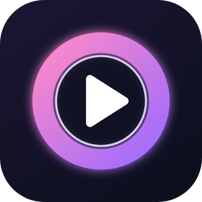

Sua lista, do seu jeito, em qualquer tela.
O MAVI Streaming+ é um reprodutor rápido e bonito para celular, TV Box, Android TV e Fire Stick. Adicione a sua lista e assista com guia de programação, favoritos e muito mais.

Por que o MAVI?
📺 Feito para a TV
Navegação pelo controle remoto, ao vivo com prévia do canal e programação completa por dia.
⚡ Abre na hora
Conteúdo guardado no aparelho e ajustes automáticos de conexão. Você não precisa configurar nada.
📋 Várias listas
Cadastre mais de uma lista pelo app ou por aqui no site. Tudo fica sincronizado.
⭐ Favoritos
Canais, filmes e séries favoritos em cada seção, sempre no topo.
▶️ Continue de onde parou
Filmes e episódios retomam no ponto em que você parou.
📱 Celular na TV
No celular, transmita para Chromecast e Google TV com um toque.
Planos
Mensal
Renove quando quiser.
Anual
12 meses pelo melhor preço.
Vitalício
Pague uma vez e use para sempre neste aparelho.
Todo aparelho novo ganha 7 dias grátis para testar. A ativação vale por aparelho.
Como começar
1. Instale
Em breve na Google Play para celular, TV Box, Android TV e Fire Stick.
2. Adicione sua lista
No app, com servidor, usuário e senha (ou o link M3U). Ou aqui no site, em Minhas listas.
3. Assista
Pronto! Você tem 7 dias grátis para conhecer tudo.
Importante: o MAVI Streaming+ é apenas um reprodutor de mídia. Não fornecemos, vendemos nem hospedamos canais, filmes, séries ou listas. Você usa o app com o conteúdo que tem direito de acessar.